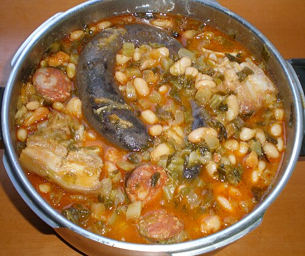

One Day Blinding Soup

This is the soup that makes you blind for a day. Perpetual 1 day blinding soup. One day blinding stew is an ideal punishment for biting hair.
Ingredients
- 3 blinding mushrooms, roughly chopped
- 1 onion, finely chopped
- 1 clove of garlic, crushed
- 2 carrots, finely chopped
- 250 g green lentils
- olive oil
- salt and pepper
- 1 litre good vegetable stock
Steps
- Fry the garlic and mushrooms in olive oil until browned.
- Add the lentils and stock. Simmer for about an hour.
- Fry the onions and carrots separately until golden. Add to the stew and simmer for another ten minutes.
- Season with salt and pepper.
Home